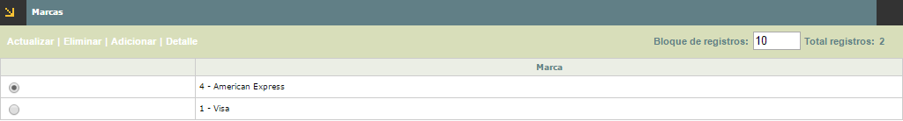
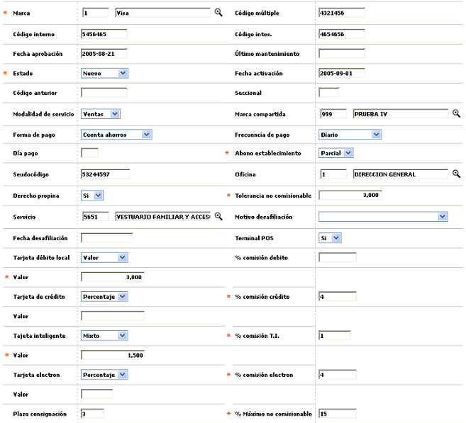
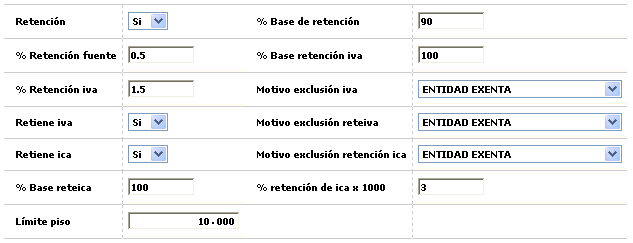
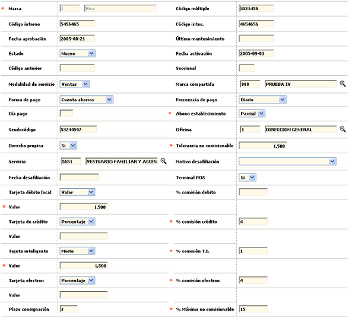
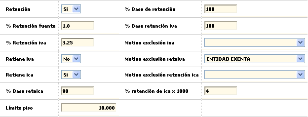
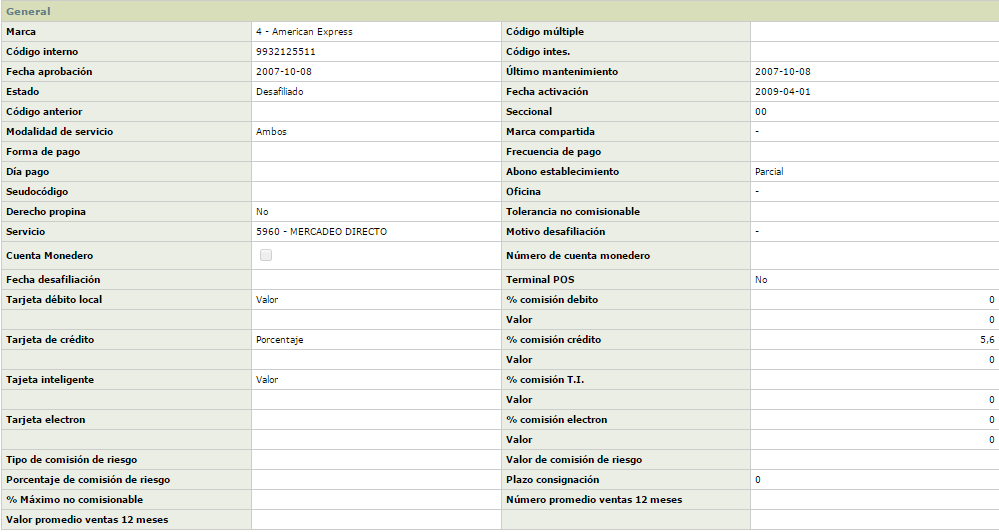
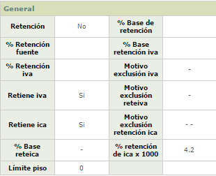

Información de establecimientos - Marcas |
Desde este formulario, que se invoca mediante el hipervínculo Marcas contenido en el formulario de Información de establecimientos, se registran las diferentes marcas habilitadas para el establecimiento y para cada una de ellas se parametrizan las condiciones de liquidación de la comisión, vinculación y estado del establecimiento, si es o no sujeto a efectuarle la retención en la fuente, y de poseer el derecho de cobrar propina, las estipulaciones bajo las que aplican.

El formulario contiene las opciones Actualizar, Eliminar, Adicionar y Detalle.
Adicionar: si el usuario invoca la opción Adicionar se despliega un nuevo formulario con los siguientes campos:

Descripción de campos
Marca |
Campo obligatorio con lista de valores de la cual se selecciona cada una de las diferentes franquicias autorizadas para el establecimiento y para la cual aplican las demás condiciones definidas en este formulario. |
Código múltiple |
En
este campo se registra el código de identificación del
establecimiento, adicional al código único, que viaja
en la cinta de cargue de establecimientos. |
Código interno |
Campo en el cual se registra el código que identifica al establecimiento exclusivamente ante la marca American Express. |
Código intes |
Permite ingresar el código que identifica al establecimiento exclusivamente ante la marca Diners. |
Fecha aprobación |
Campo
en formato YYYY-DD-MM en el que se registra la fecha de aprobación
de la solicitud de afiliación al operador (franquicia) y asignación
del código único. |
Ultimo mantenimiento |
En este campo en formato YYYY-DD-MM se registra la fecha en la cual se hizo la última visita realizada al establecimiento por parte del operador de la franquicia. Aplica en especial para credibanco - visa |
Estado |
Campo
obligatorio tipo combo en el que se selecciona entre Desafiliado,
Inactivo, Activo o Nuevo la condición en que se encuentre
el establecimiento respecto de la marca o franquicia. |
Fecha activación |
En este campo en formato YYYY-MM-DD, no obligatorio, se registra la fecha más reciente de la activación del establecimiento. |
Código anterior |
Campo
alfanumérico de 11 dígitos, no obligatorio, en el que
se registra el anterior código asigando al establecimiento, en
caso que lo hubiere, por ejemplo cuando se ha modificado la codificación. |
Seccional |
Este campo alfanumérico de dos dígitos, no obligatorio, se utiliza para facilitar un agrupamiento o sectorización de los comercios de una cadena. |
Modalidad de servicio |
Campo obligatorio tipo combo del cual se puede seleccionar entre Ventas, Avances o Ambos el indicador del tipo de servicio autorizado al establecimiento. |
Marca compartida |
Cuando un establecimiento tiene un producto de marca compartida con la entidad, en este parámetro se indica el grupo de afinidad asociado a dicho producto y que permite enrutar la información contable que viaja en las interfases. |
Forma de pago |
Campo tipo combo en el que se puede seleccionar entre Cuenta ahorros, Cuenta corriente o Cuenta rotativa el tipo de cuenta a la cual se deben hacer los abonos al establecimiento. |
Frecuencia de pago |
En
este campo tipo combo se selecciona entre Diario, Semanal, Quincenal,
Mensual, Otro la frecuencia con la cual se deben hacer los abonos
al establecimiento. |
Día de pago |
Cuando en el campo anterior se ha seleccionado Otro, aquí se indica el número de días que debe transcurrir desde la fecha de la transacción para hacer el abono a la cuenta del establecimiento. |
Abono establecimiento |
En
este campo obligatorio tipo combo se selecciona entre Total
y Parcial para indicar si de las consignaciones realizadas
solamente se aplica o abona a la cuenta de depósitos, el valor
correspondiente a las transacciones de consumo que han superado exitosamente
todas las validaciones (Parcial), o si por el contrario, se le abona
el Total de la mismas y en caso de presentarse inconvenientes se realizará
el ajuste a la cuenta por el respectivo monto. |
Pseudocódigo |
Algunos
de los procesadores, canalizan las operaciones de adquirencia de los
establecimientos a través de un código (asignado por éste)
como mecanismo de seguridad. Este campo permite registrar el código
perteneciente al establecimiento, el mismo que permite llegar y afectar
la cuenta ya sea corriente o de ahorros de cada comercio. |
Oficina |
Campo que contiene lista de valores de la cual se puede seleccionar la sucursal para la cual se desea asociar el código único de establecimiento y de esta manera disponer de información sobre los avances en efectivo gestionados es estas. |
Derecho propina |
En este campo tipo combo se selecciona entre Si o No el establecimiento de acuerdo con el tipo de servicio prestado está autorizado para el cobro de propina. |
Tolerancia no comisionable |
Campo
numérico de 18 dígitos no obligatorio, en el que se registra
el valor absoluto máximo acordado entre el emisor y el operador
(franquicia) en que
puede excederse el monto de comisión cobrado. Si no se define
un valor para el establecimiento, el sistema asigna el valor que por
defecto presente el tipo de
servicio o en su ausencia el valor determinado por la franquicia. |
Servicio |
Campo obligatorio con lista de valores de la cual se selecciona el tipo de servicio correspondiente al nombre del principal servicio o producto ofrecido por el establecimiento. |
Motivo desafiliación |
Este
campo tipo combo, permite seleccionar el motivo
de desafiliación correspondiente a la razón o
causal por la cual un establecimiento es separado o excluido de la marca
o franquicia, la que también puede ser voluntaria. |
Fecha desafiliación |
Campo en formato YYYY-MM-DD en el que se registra la fecha en la cual el establecimiento de desafilió de la marca. |
Terminal POS |
En este campo se indica si el establecimiento posee o no P.O.S. para realizar o tramitar las transacciones. |
Tarjeta débito local / Crédito / Inteligente / Electron |
Cada uno de estos campos tipo combo, permite seleccionar de manera excluyente si la comisión que la entidad emisora de la tarjeta le va a cobrar al establecimiento por el uso de cada tipo de tarjeta corresponde a un Valor fijo, un Porcentaje sobre el valor de la transacción o Mixto, es decir, un valor fijo más un porcentaje adicional. |
% Comisión débito / Crédito / Inteligente / Electron |
Si el tipo comisión para un tipo de tarjeta se ha definido como Porcentaje o Mixto, en este campo de 3 enteros y 2 decimales se registra la proporción a aplicar sobre la transacción para determinar el monto de comisión para la entidad. |
Valor |
Cuando el tipo comisión se define como Valor o Mixto, en este campo de 14 enteros y 2 decimales se registra el valor fijo a cobrar al establecimiento por cada transacción, a modo de comisión para la entidad. |
Plazo consignación |
En este campo numérico de tres dígitos no obligatorio, se registra el número máximo de días hábiles de que dispone el establecimiento para realizar las consignaciones de los comprobantes manuales o no electrónicos. |
% Máximo no comisionable |
Campo
numérico de 3 enteros y dos decimales, no obligatorio, en el
que se registra el valor porcentual máximo o tope para el cobro
de propina, determinado inicialmente por la franquicia; el valor que
exceda dicho tope, no será considerado como propina y sumará
para aumentar la base sobre la cual se cobra la comisión al establecimiento.
Si no se define un valor para el establecimiento, el sistema asigna
el valor que por defecto presente el tipo
de servicio o en su ausencia el valor determinado por la franquicia. |
El formulario anterior y que se denomina nueva Marca, cuenta con el botón de localización que al ser invocado despliega un nuevo formulario en el cual se puede registrar la información correspondiente al IVA, retenciones y otros campos que son aplicables dependiendo la ubicación para la cual se encuentre parametrizado el sistema. El formulario desplegado contiene los siguientes campos.

Descripción de campos
Retención |
Campo tipo combo en el que se indica Si o No se debe aplicar al establecimiento el impuesto de retención en la fuente acorde al tipo de sociedad al cual pertenece. |
% Base de retención |
En
este campo numérico de 3 enteros y 2 decimales, no obligatorio,
se define el valor porcentual aplicable al monto de los consumos efectuados
en el establecimiento, sobre cuyo resultado se liquidará el impuesto
de retención de la fuente. |
% Retención fuente |
Campo numérico de 3 enteros y 2 decimales, no obligatorio, en el que se registra el porcenaje a aplicar sobre la base de retención en la fuente (explicada en el campo inmediatamente anterior), para determinar el valor descontado al establecimiento por concepto de impuesto de retención en la fuente. |
Retiene IVA |
En este campo tipo combo se indica Si o No se debe aplicar al establecimiento el impuesto de retención sobre el IVA. En caso de estar seleccionada la opción No, en el campo Motivo Exoneración Retención iva, se debe registrar la causal correspondiente. |
% Base de retención IVA |
Campo numérico de 3 enteros y 2 decimales, no obligatorio, en el cual se define el valor porcentual aplicable al valor del impuesto sobre las ventas (IVA), sobre cuyo resultado se liquidará el impuesto de retención IVA |
% Retención IVA |
En
este campo numérico de 3 enteros y 2 decimales, no obligatorio,
se registra el valor porcentual aplicable sobre la base de retención
del IVA (explicada en el campo inmediatamente anterior), para determinar
el valor descontado al establecimiento por concepto de impuesto de retención
IVA. |
Retiene ICA |
Campo tipo combo en el que se indica Si o No se debe aplicar al establecimiento el impuesto de retención sobre el ICA acorde a la normatividad en particular con la ubicación del establecimiento. En caso de estar seleccionada la opción No, en el campo Motivo Exoneración Retención ica, se debe registrar la causal correspondiente. |
% Base de retención ICA |
En este campo numérico de 3 enteros y 2 decimales, no obligatorio, se define el valor porcentual aplicable sobre el valor de la venta sin tener en cuenta otros conceptos (IVA, propinas, etc), y sobre cuyo resultado se liquidará el impuesto de retención ICA |
% Retención de ICA x 1000 |
Campo
numérico de tres enteros y dos posiciones decimales en el que
se registra la tasa, expresada en milésimas (o/oo), que se aplicará
sobre la base indicada en el campo anterior, para determinar el valor
a retener al establecimiento por conepto del impuesto de industria y
comercio ICA. |
Motivo exclusión retención iva |
En este campo no obligatorio que contiene lista de valores se selecciona el motivo de exoneración retención por el cual se excluye al establecimiento de la aplicación de la retención del iva. |
Motivo exclusión reteiva |
Campo no obligatorio que contiene lista de valores de la que se selecciona el motivo de exoneración retención por el cual se excluye al establecimiento de la aplicación de la retención del iva. |
Motivo exclusión retención ica |
En este campo no obligatorio que contiene lista de valores se selecciona el motivo de exoneración retención por el cual se excluye al establecimiento de la aplicación de la retención del ica. |
Límite de piso |
Campo
numérico de 18 dígitos no obligatorio, en el que se determina
el valor a partir del cual se requiere solicitar la autorización
correspondiente para cualquier utilización. El valor por defecto
es cero (0). |
Actualizar: si el usuario selecciona un registro e invoca la opción Actualizar se despliega un formulario en el cual el único campo NO modificable es la marca.

Al igual que el formulario nueva Marca, este también cuenta con el botón de localización que al ser invocado despliega un formulario en el cual todos los campos son modificables.

Detalle: si el usuario selecciona un registro e invoca la opción Detalle se despliega un formulario con la información completa del registro y en el cual ninguno de sus campos es modificable.

Al igual que el formulario nueva Marca, este también cuenta con el botón de localización que al ser invocado despliega un formulario en el cual ninguno de sus campos es modificable.
